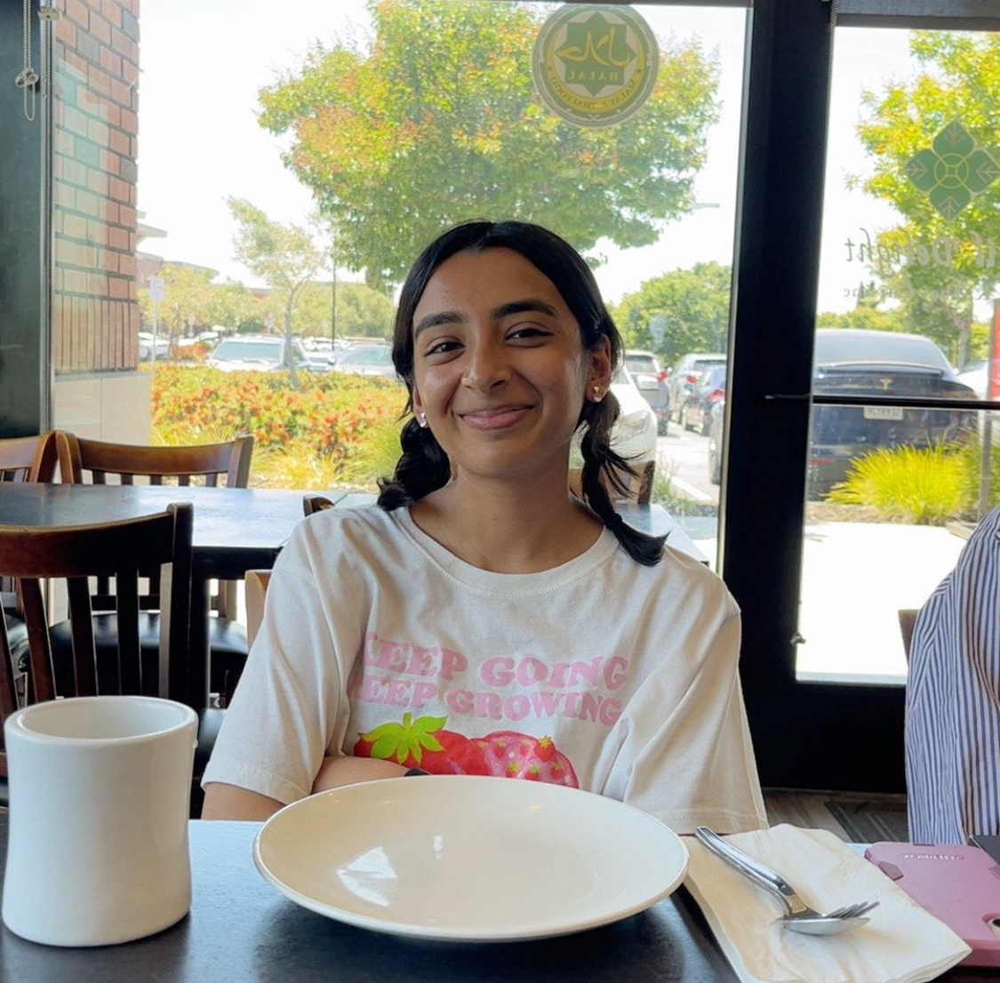

😊 Learn a little bit about me!

Hometown Roots
I was born in Bangalore, India 🇮🇳, moved to Singapore 🇸🇬 as a child, and spent my high school years in the Bay Area, California 🇺🇸. Living in different places has taught me the importance of flexibility and sparked a love for meeting new people and learning new things. I’m always up for an adventure! 🚀
Current Adventures
Now at Cornell University 🍎, I’m diving into hands-on learning through Cornell Mars Rover 🛸, where I’m contributing to the electrical subteam, and robotics research in EmPRISE Lab. I’m also passionate about mentoring young girls in coding through Women in Computing’s Girls Who Code program 💻, and supporting prospective students as part of the Society of Women Engineers Prospective Student Committee.
This past summer, I interned as a Software Engineer at HiPaas Inc. where I developed and optimized machine learning models for predictive analysis on health insurance claims. I'm always looking to grow, learn, and help others achieve the same, whether through technical work, volunteering, or leading initiatives. 🌱
What I Do & Looking Ahead
I’m passionate about diving deeper into machine learning 🤖, robotics 🤖, and space exploration 🌌. At the same time, I’m committed to advancing diversity in tech and closing the gap between people and the tools they use. The future is bright, and I’m excited to be a part of it! ✨